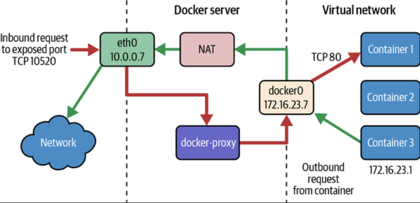

Docker 引擎(Docker Engine), 顾名思意，是 Docker 的核心. 它为 Docker 提供动力, 并承担所有繁重的工作. 本文将深入探讨这一关键组件的内部运作, 以便了解 Docker 在内核下是如何工作的.
The Evolution of the Docker Engine | Docker 引擎的演进
Docker 最初是一个巨大的单体(monolith), 所有代码都塞在同一个项目里. 对于 dotCloud来说, 这种方式一开始是可行的. 实际上, 这个方向运作得非常好, 以至于他们放弃了其他服务、把所有赌注都押在 Docker 上, 甚至把公司重命名为 Docker, Inc.
一开始, Docker 是一个又大又混乱的单体应用. 随着时间推移, Docker, Inc. 发现这种做法不可持续, 他们需要把系统拆分出来:
- 各个部分可以独立成长
- 更容易升级某些部分 - 可以替换旧组件而不影响整体
- 让社区更容易参与贡献 - 更小的组件意味着更多人能参与进来
- 更易跨平台 - 他们想要 Docker 在每个平台上运行, 而不只是 Linux
拆分的第一步是把客户端 client 剥离出来. 把客户端从大应用中抽出, 赋予它新职责: 把用户命令翻译成 Docker 引擎能理解的指令(也就是原来单体里"内核部分"的接口)
此时, Docker 引擎主要有两部分:
- Daemon 守护进程: 处理容器、网络和卷
- LXC: Docker 与 Linux 内核之间的中间层
Breaking Things for the Better 为了更好的架构而拆分
然而, 这个架构存在问题:
- LXC 仅限于 Linux, 若要支持 Windows 或 macOS 这就难办了
- 守护进程负担过重, 它做的事情太多, 需要"放轻松"
因此, Docker 放弃了 LXC, 缓存更灵活, 冯举平台适应性的 libcontainer. 同时, 他们也减轻了守护进程的职责, 把守护进程做成更简单的 API 接口, 供客户端与之通信.
但这还不是终点. libcontainer 本身仍然太大、太笨重.
于是 Docker 把它进一步拆成更小的部分: docker-init、runc、containerd 和 shim, 每个组件只做一件事, 这带来了:
- 更好的分工协作: 社区可以专注于特定组件
- 自由试验: 开发者可以像搭积木一样替换或组合部件
- 更清晰的设计: 不再是纠结在一起的杂乱代码

Specs and Standards 规范与标准
Docker 引擎严格遵循开放容器倡议 OCI 的协议和标准, 意味着你用 Docker 引擎构建的镜像, 只要目标平台也遵循 OCI 标准, 就能在别的容器平台上运行.
Docker 引擎帮助你 build 构建、ship 分发和 run 运行符合 OCI 的镜像, 这三个阶段由三大标准引导:
- Image Specification 镜像规范: 该规范定义了容器镜像如何被创建, 相当于容器内部包含内容(依赖、配置等)的详细蓝图
- Distribution Specification 分发规范: 该规范规定了容器镜像如何共享与传输, 相当于定义了一套"运输网络"的规则, 确保镜像能从 A 点到 B 点顺利传输
- Runtime Specification 运行时规范: 该规范描述容器如何被执行和管理, 从启动/停止到与宿主系统交互, 即运行时的行为规则
历史部分就到这, 下面进入重点: 逐块剖析 Docker 的当前架构, 看看它们如何协同
How a Command is Processed in the Docker System? 一个命令是如何被处理的?
现在来拆解一下, 当运行如下命令时发生是事情:
docker start my-container
这实际上是在和 Docker CLI (client) 打交道, CLI 就像是翻译器, 将输入的命令转换成 Docker daemon 守护进程能懂的东西.
流程大致如下:
- Command Translation 命令翻译: Docker CLI 将命令转换为一个 API 调用, 例如 REST 或 gRPC, CLI 会将输入命令翻译成这两种格式之一
- Sending the Request 发送请求: 翻译完成后 CLI 将请求发送给 Docker daemon, 即守护进程, 是操作中心, 它接受请求、处理请求, 并在幕后完成实际工作
因此, 当输入 docker start my-container 的时候, CLI 会告诉守护进程, 守护进程收到后就开始工作, 协调一切将容器启动起来
The Daemon 守护进程
守护进程就像 Docker 的前台接待员, 它为客户端 (例如 Docker CLI) 提供一个接口, 通过高级抽象与 Docker 引擎交互.
当守护进程接到请求时, 他会验证并处理该命令, 然后将请求翻译为更低一级的指令, 交给另一个模块 containerd
containerd
顺带一提: c 小写是风格选择; d 表示 daemon
Docker 引擎的模块化设计意味着它被拆分为更小的组件, 模块化的好处是灵活与可扩展: 可以替换、更新或者扩展单个部件, 而不是修改整个系统
containerd 是一个高层运行时(high-level runtime), 复杂从容器声明周期的整体角度进行管理, 就像项目经理:
- 创建、启动、停止并删除容器
- 管理网络与卷 (volumes)
- 拉取镜像 (pull images)
- 处理容器级别的其他需求
当守护进程将命令发送给 containerd 时, containerd 会准备容器, 但不直接执行容器的实际进程, 它依赖一个更低层次的专用运行时 runc 来完成具体工作.
runc
r 小写是 Unix 风格, c 指 container 容器
runc 的职责非常单一: 运行 OCI 容器, 这里的 OCI 指的是行业标准的容器和镜像协议, 为了兼容与互操作而存在.
- 创建容器环境
- 启动容器进程
- 确保容器在宿主环境的边界内运行
虽然 runc 很重要, 但 containerd 与它的交互方式引入了额外的一些灵活性, containerd 并不直接与 runc 强耦合: 它通过一个抽象, shim 来与 runc 交互.
Shims 桥接进程
在 containerd 的上下文中, shim 是一个轻量级的进程, 位于 containerd 和实际的容器运行时之间. 它的主要作用是将 containerd 与运行时解耦, 保证灵活性与独立性, 这允许 containerd 管理容器, 而无需紧密耦合到特定运行时.
当 containerd 启动一个容器时, 他会启动一个 shim 进程, shim 则调用运行时来设置容器. runc 完成诸如设置命名空间和 cgroups, 挂载文件系统, 启动容器化等"重活". 但一旦容器启动, runc 就会退出, 留下 shim 来管理容器的声明周期交互. shim 功能如下:
- 流程管理: 保持容器进程存活并处理信号
- I/O 流: 保持日志并转发容器与 containerd 之间的输入/输出
- 声明周期事件: 监控并上报诸如容器终止等事件
如果所有底层运行时都遵循 OCI 运行时规范, 为什么 containerd 还需要 shim? 单胺是模块化和关注点分离:
- 解耦: shim 抽象出容器特定的操作, 使 containerd 能专注于管理多个容器以及他们的网络与卷, 而不必处理每个容器的细节
- 灵活性: 有了 shim 就可以比较容易替换掉 runc, 改用同样遵守 OCI 的其他运行时, 架构因此能使用新技术
- 简化: 每个 shim 只处理一个容器, 这种分离确保单个应用容器的问题不会波及到其他容器
From Shim to Docker-init
当 shim 接手后, 它继续管理容器的生命周期. 不过, Docker 引擎还需要与容器内的进程交互, 比如确保日志、信号和资源得到适当处理. 这就是 docker-init 的作用, 它在容器内部充当 PID 1 的角色, 管理并清理容器化应用的资源.
Docker-init: The Unsung Hero of Containers / 容器中的无明英雄
在每个容器内部, PID 1 是最关键的首个进程. 容器只要 PID 1 运行, 就存活. 所以, PID 1 的容器生命周期的基石. 当 containerd 需要停止或终止容器时, 他会依赖 PID 1 来确保容器内的所有子进程被正确清理. 如果 PID 1 退出, 所有关联的子进程会自动被终止.
docker-init 的关键作用之一是清理僵尸进程 zombie processes, 那些执行完没有被父进程回收的"被遗忘"的子进程. 这类进程若放任不管, 会逐渐占用系统资源. docker-init 会及时回收它们, 保持容器环境整洁与高效.
另一项重要任务是处理系统信号(例如 SIGTERM 或 SIGINT), 许多容器化应用本身并不善于处理这些信号, 可能导致不完整或粗暴的关闭. docker-init 会捕捉这些信号, 并适当地转发, 保证容器内的应用能优雅地退出.
作为 PID 1, docker-init 也为容器化应用提供了一个可预期且稳定的运行基础. 它的存在简化了容器生命周期的管理, 使容器更加稳定可靠.
总之, docker-init 确保容器保持干净, 响应迅速并得到良好管理. 它不一定显眼, 但正是这些细小的贡献让容器变得可靠且高效.
Network Ports and Unix Sockets 网络端口和Unix套节字
Docker CLI 和 docker daemon 可以通过 Unix Sockets 和 network ports 沟通. Docker, Inc. 已经向 Internet Assigned Numbers Authority(IANA)注册了3个端口, 用于Docker daemon 和 client:
- TCP port 2375 用于未加密连接
- port 2376 用于 SSL 加密连接
- port 2377 用于 Docker Swarm mode
在需要使用不同设置的场景下, 更换端口配置很容易.
Docker 安装程序的默认设置是只使用 Unix 套接字与本地 Docker 守护进程通信.
这样做可以确保系统默认采用尽可能安全的安装方式.
这个选项同样可以方便地修改, 但强烈建议不要用网络端口来暴露 Docker, 因为 Docker 守护进程内部并没有用户认证和基于角色的访问控制.
Unix 套接字在不同操作系统的路径可能不同, 但在大多数情况下可以在 /var/run/docker.sock 找到.
Container Networking 容器网络
尽管 Linux 容器在很大程度上是宿主机上运行的进程, 但在网络层他们通常表现得与其他进程很不一样. Docker 最初只支持一种网络模型, 但现在提供了多种稳健的配置, 可以曼珠大多数应用的需求. 大多数人以默认配置运行容器, 这称为桥接模式 Bridge Mode.
要理解桥接模式, 最容易是把每个 Linux 容器看作是在私有网络上的一台主机. Docker 服务器充当一个虚拟桥 virtual bridge, 容器则是作为桥后的客户端. 桥只是一个把一侧流量转发到另一侧的网络设备. 因此, 可以将它想象成一个虚拟网络, 每个容器像附着在该网络上的主机. 实际上是: 每个容器都有一个虚拟以太网接口连接到 Docker 桥, 并未该虚拟接口分配一个 IP 地址. Docker 运行在宿主机上绑定并暴露单个或一组端口到容器, 以便外部世界可以通过这些端口访问容器, 流量很大程度上由 vpnkit 库来管理.
Docker 从 未使用的 RFC 1918 私有子网块中分配私有子网, 它检测主机上有哪些网络块未被使用, 并把其中一个分配给虚拟网络. 该网络通过服务器上的一个名为 docker0 的接口桥接到宿主机的本地网络. 这意味着默认情况下, 所有容器都在同一个网络中, 可以直接相互通信. 但要达到宿主机或外部网络, 他们会通过 docker0 虚拟桥接接口转发出去.

有多种方式配置 Docker 的网络层, 从分配自己的网络块到配置自定义桥接接口, 方式繁多让人眼花缭乱. 人们通常使用默认机制, 但有时需要更复杂或更贴合应用的配置.
Summary 总结
Docker 引擎不仅仅是一款软件, 它是一套精心设计的模块化组件系统, 这些组件协同工作以实现容器的高效、可扩展与可移植. 从 CLI 中敲下命令, 到 runc、shim、docker-init 所处理的底层操作, 每个元素都扮演者明确且重要的角色.
通过遵守严格的 OCI 标准, Docker 确保其生态系统不仅强大, 且具备通用兼容性. 这种遵循标准的做法建立了信任, 为开发者与企业提供了稳定的基础, 模块化架构简化了容器管理, 并鼓励创新, 允许每个组件独立演进与改善.
理解 Docker 引擎不仅是知道容器如何工作, 更是认识其背后经过深思熟虑的工程设计. 正是这种工程让现代软件开发更快、更高效、更容易上手.